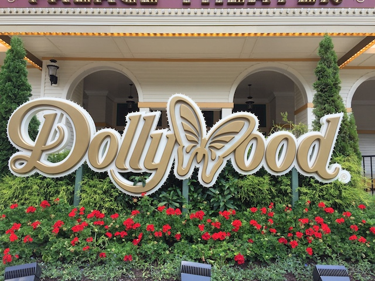
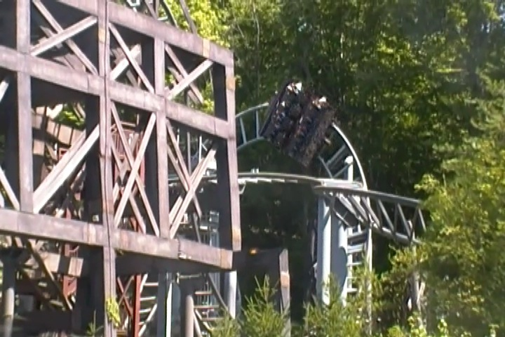
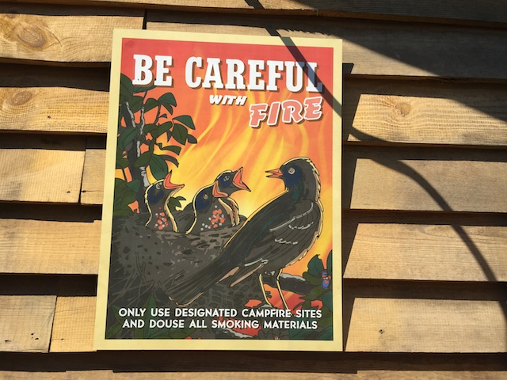
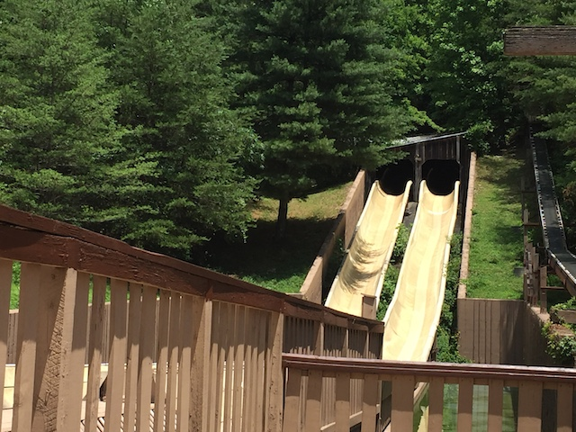
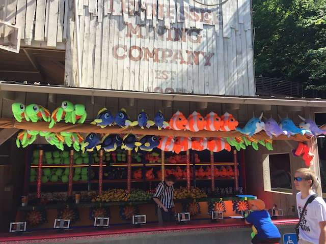
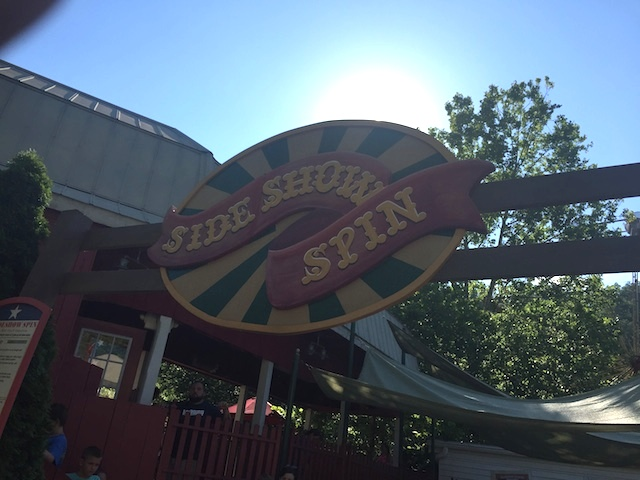
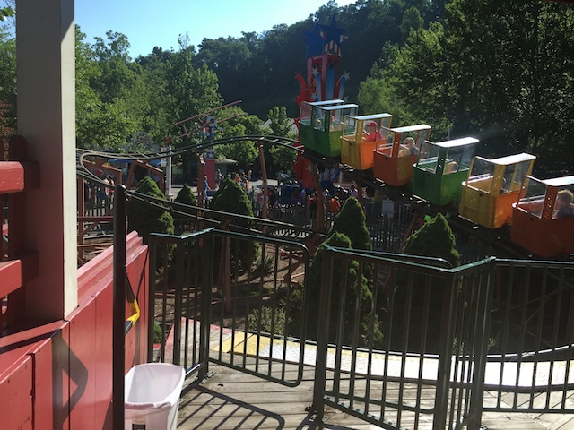
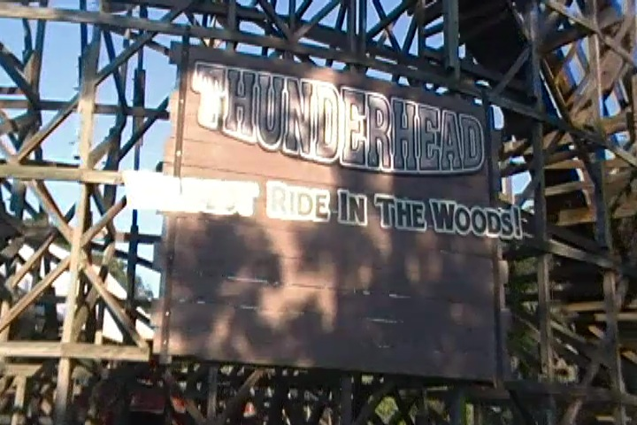
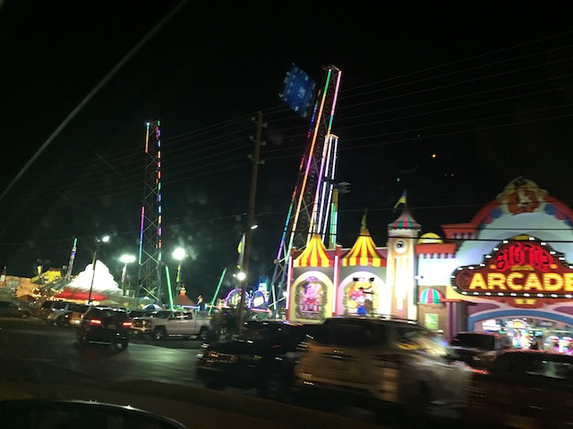

| |
Deep South Trip 2016
Carowinds Dollywood Lake Winnie Six Flags Over Georgia
All right. Time to leave the Carolinas. Oh, and before we go, look at the gas prices. Gas is really f*cking cheap in the Deep South (and pretty much anywhere that's not California). Considering how I'm in financial lockdown, this is always a good thing.
♫Hey porter! Hey porter! Please get my bags for me. I need nobody to tell me now that we're in Tennessee.♫
Yeah. If we're in Tennessee, then you know why we're here. ;)

Yay! I finally made it to one of the few major parks in the United States that I had still yet to hit! =)
Yeah. You can tell that Dollywood is a very big spatious park with lots of walking room.
 All right. First things first, let's do the low capacity Euro Fighter first and get that out of the way.
All right. First things first, let's do the low capacity Euro Fighter first and get that out of the way.

Yeah. Mystery Mine may have a weird layout, but I love it. Easily one of my favorite Euro Fighters.
 Yeah, Fluch von Novgorod @ Hansa Park is still by far, my favorite Euro Fighter because that not only has great theming, but a really cool launch, ejector air, and is just a great ride. But even so, Mystery Mine is my 2nd favorite. And I really do love that ending and the theming. =)
Yeah, Fluch von Novgorod @ Hansa Park is still by far, my favorite Euro Fighter because that not only has great theming, but a really cool launch, ejector air, and is just a great ride. But even so, Mystery Mine is my 2nd favorite. And I really do love that ending and the theming. =)
Gee. I wonder if I've seen a shirt like that at any other theme parks?
Yeah, these owls are cute. But they're no Wild Eagle.
 All right. Next up, let's do the other low capacity ride, Firechaser Express.
All right. Next up, let's do the other low capacity ride, Firechaser Express.

The whole ride is themed to being firefighters and putting out fires. Definetly a unique theme for a roller coaster.
"Thank you volunteers for doing a job and best of all, we don't have to pay you for your work".
 Firechaser Express is easily and without a doubt, one of the most unique and coolest family coasters ever. =)
Firechaser Express is easily and without a doubt, one of the most unique and coolest family coasters ever. =)
 It's really cool. It's got some cool pops of airtime, some fun speed, and even a backwards section.
It's really cool. It's got some cool pops of airtime, some fun speed, and even a backwards section.
 "What's that? You didn't a $75 fee? Go home volunteer firefighters. We're letting this house burn down to the ground".
"What's that? You didn't a $75 fee? Go home volunteer firefighters. We're letting this house burn down to the ground".
"Come one! Come all! Come see the worlds greatest volunteer firefighter!".
 Oh joy. I get to ride another B&M Wingrider.
Oh joy. I get to ride another B&M Wingrider.
 Yeah. I'm not crazy about the B&M Wingriders. And yeah, Wild Eagle isn't intense. But hey. It is a fun little ride, and much like Raptor @ Gardaland, I enjoyed it.
Yeah. I'm not crazy about the B&M Wingriders. And yeah, Wild Eagle isn't intense. But hey. It is a fun little ride, and much like Raptor @ Gardaland, I enjoyed it.
 It just fits in BEAUTIFULLY with Dollywood. A perfect fit for the park. I just love the way it looks.
It just fits in BEAUTIFULLY with Dollywood. A perfect fit for the park. I just love the way it looks.
 The only real problem I have with it are the constantly tightening restraints on all B&M Wingriders. DAMMIT!! FIX THIS B&M!!!
The only real problem I have with it are the constantly tightening restraints on all B&M Wingriders. DAMMIT!! FIX THIS B&M!!!
 Sweet! Now we get to ride Tennessee Tornado! =)
Sweet! Now we get to ride Tennessee Tornado! =)
 "HEY YOU!!! TAKE OFF YOUR F*CKING HAT!!!"
"HEY YOU!!! TAKE OFF YOUR F*CKING HAT!!!"
 I know Tennessee Tornado has a reputation for being both one of the best Arrow coasters ever, as well as one of the smoothest Arrows ever. I'm happy to report that both of these things are true.
I know Tennessee Tornado has a reputation for being both one of the best Arrow coasters ever, as well as one of the smoothest Arrows ever. I'm happy to report that both of these things are true.
 Honestly, the only flaw I can think about the ride is that it's really short. Other than that, I love it.
Honestly, the only flaw I can think about the ride is that it's really short. Other than that, I love it.
And they have Blazing Fury, which is basically the same thing as Fire in the Hole at Silver Dollar City. Except this one doesn't have water at the bottom of its drops. Yeah, both are really fun dark rides, but they're dark rides. NEITHER OF THEM ARE CREDITS!!! Just because there's a drop does not mean that it's a credit.
Yeah. You can totally tell that Dollywood is the sister park of Silver Dollar City.
And just like Silver Dollar City, the food here is f*cking amazing!! =)
 I may not be a huge fan of Ham & Beans, but this was really good food.
I may not be a huge fan of Ham & Beans, but this was really good food.
Considering how many fatasses are in Tennessee, this hill is quite the barrier for many folks here. =P
And just like at Silver Dollar City, they also have a Screamin Swing just plopped in a barn.
I just love the theming here and how they even try and theme their Screamin Swings.
While the water slide at Silver Dollar City was sadly taken down before I first went there, Mountain Sidewinder is still thriving to this day at Dollywood.

It's just a ton of fun. I love it. And surprisingly, I didn't get nearly as wet as I expected.
Yeah. Those free samples that we tasted were really freaking good. =)
I know Moonshine Hot Sauce sounds horrible since I HATE moonshine and I'm incredibly weak when it comes to spicy foods, but I actually liked it.
Honestly, the only reason I didn't buy some of those amazing jams is because I wouldn't be able to take it home since *sigh* Jam is a liquid and I only took a single bag. Plus, I'm in financial lockdown and can't just willy nilly buy jams.
Move on folks. The Lightning Rod Hot Sauce isn't for sale today folks. ;)
 Yeah. Dare Devil Falls is freaking awesome. Easily one of the best water rides out there. Seriously, it's probably going to make our Top 10 Water Rides list.
Yeah. Dare Devil Falls is freaking awesome. Easily one of the best water rides out there. Seriously, it's probably going to make our Top 10 Water Rides list.
I love how this park has a sense of humor.
Yeah. There's only one reason we're at the Grist Mill.
CINNAMON BREAD!!! YAY!!! And you can even get it to go. I know what we'll be eating for breakfast tomorrow morning. =)
 I know this sounds weird, but I think the Dollywood Cinnamon Bread is actually slightly better than the Silver Dollar City Cinnamon Bread. I know it doesn't mean much since both are amazing and some of the best theme park food ever. But just look at the Dollywood cinnamon bread and compare it to the Silver Dollar City cinnamon bread. It just...has more of a cinnamon kick. But either way, I LOVE IT!!! I LOVE IT!! I LOVE IT!!!
I know this sounds weird, but I think the Dollywood Cinnamon Bread is actually slightly better than the Silver Dollar City Cinnamon Bread. I know it doesn't mean much since both are amazing and some of the best theme park food ever. But just look at the Dollywood cinnamon bread and compare it to the Silver Dollar City cinnamon bread. It just...has more of a cinnamon kick. But either way, I LOVE IT!!! I LOVE IT!! I LOVE IT!!!
I just love the atmosphere of Dollywood. It's really freaking beautiful.
 OH BOY!!! LET'S GO RIDE THE NEWEST RMC!!! =D
OH BOY!!! LET'S GO RIDE THE NEWEST RMC!!! =D
What!? Lightning Rod is closed!? NO!!!!!
 Yeah. Unlike Joker a couple weeks ago (which I'll go back up again to ride this summer), I paid very close attention to everything that was going on with Lightning Rod. Considering how great Herschend is with opening their rides on time, I didn't think I'd have any trouble getting on Lightning Rod. I knew there'd be some bugs and technical difficulties, but I at first assumed that it'd all be good by the summer. But by May, I was worried about getting on. I was on pins and needles and checking very frequently about all that's happening with Lightning Rod, and then there was all that obnoxious talk about #It'llNeverOpen (Ha ha. Not funny). Then, it began soft opening, and I had my hopes up. Then it officially opened and I was all "YES!!! I GET TO RIDE LIGHTNING ROD!!!". I was happy. And then there was a recall for all RMCs thanks to something being wrong with the cylinder. F*CK!!! =( So yeah. By then, I knew that I wasn't going to get on Lightning Rod, much to the joy of some people laughing like a jackass about it. And yeah, I would've pushed the trip later in the summer in May after all the fear of Lightning Rod, but this was the only week where I knew for sure I could go to the Deep South and not have to worry about having the time off.
Yeah. Unlike Joker a couple weeks ago (which I'll go back up again to ride this summer), I paid very close attention to everything that was going on with Lightning Rod. Considering how great Herschend is with opening their rides on time, I didn't think I'd have any trouble getting on Lightning Rod. I knew there'd be some bugs and technical difficulties, but I at first assumed that it'd all be good by the summer. But by May, I was worried about getting on. I was on pins and needles and checking very frequently about all that's happening with Lightning Rod, and then there was all that obnoxious talk about #It'llNeverOpen (Ha ha. Not funny). Then, it began soft opening, and I had my hopes up. Then it officially opened and I was all "YES!!! I GET TO RIDE LIGHTNING ROD!!!". I was happy. And then there was a recall for all RMCs thanks to something being wrong with the cylinder. F*CK!!! =( So yeah. By then, I knew that I wasn't going to get on Lightning Rod, much to the joy of some people laughing like a jackass about it. And yeah, I would've pushed the trip later in the summer in May after all the fear of Lightning Rod, but this was the only week where I knew for sure I could go to the Deep South and not have to worry about having the time off.
 Yeah. There's no way to sugar-coat it. Getting screwed out of a launched RMC that looks like one of their best coasters yet, that sucks. =(
Yeah. There's no way to sugar-coat it. Getting screwed out of a launched RMC that looks like one of their best coasters yet, that sucks. =(
Yeah, I'm not happy just seeing the Lightning Rod train sitting there.
Yeah. I really like the theme of Lightning Rod.
 Well, Lightning Rod may be closed, but at least we can ride Dollywoods other wooden coaster, Thunderhead.
Well, Lightning Rod may be closed, but at least we can ride Dollywoods other wooden coaster, Thunderhead.
 And in good news, Thunderhead is F*CKING GREAT!!! =)
And in good news, Thunderhead is F*CKING GREAT!!! =)
 Seriously, Thunderhead is crazy and my new favorite GCI, beating out Gold Striker. Hell, it just might even crack our Top 10 Wooden Coasters List.
Seriously, Thunderhead is crazy and my new favorite GCI, beating out Gold Striker. Hell, it just might even crack our Top 10 Wooden Coasters List.
Hey, I'm more than happy to take another ride on Mystery Mine.
Yeah. We're screwed.
The Splash Battle they have here looks really freaking good.

Looks like someone is trying to cash in on Finding Dory (Seriously, it's really good). ;)
 Stop mocking me!!! >=(
Stop mocking me!!! >=(
Yeah. Dollywood may want to think twice about having wind chimes in the park after seeing us come across them.
Those scented candles are awesome. Again, I'd buy one, but financial lockdown.

Oh yeah. I forgot that there's still a credit for us to get at Dollywood.

Yeah. You can tell that we are credit whores.
Joy!! They have a cave here!!!
Well, cave theming. Yeah, it's nice and I really like how much effort they went into theming it. But let's be real. This is no Marvel Cave.
I'm still surprised that the church in the park didn't just immidietly burst into flames by having us walk by. =)
Fun fact. Dollywood also has an Eagle Sanctuary, complete with an Eagle Show (Gee, funny how there's an endangered species animal sanctuary here, and yet, rangers aren't acting like jackasses about it here).
Be an eagle! Not a chicken!
All right. Let's go for a ride on the Dollywood Express.
Yeah. The Dollywood Express is the parks steam train, and unlike most park trains, this is nothing to just ignore.
For the Dollywood Express is an actual steam train powered by coal. I know people like it because its authentic. And yeah. Authenticity is awesome. But the liberal in me just isn't that happy about coal power. Plus, you get soot on you when riding. Not exactly crazy about that.

Thunderhead from the Dollywood Express.
And just like at Silver Dollar City, they have a water peeing tree.
 Well, it's dinner time, and we gotta eat at the other resteraunt recommended to us when visiting Dollywood. Miss Lillian's Chicken.
Well, it's dinner time, and we gotta eat at the other resteraunt recommended to us when visiting Dollywood. Miss Lillian's Chicken.
Yeah. That's some good Southern Fried Chicken right there.
Hmm. What's this?
 Yep. We're checking out Dolly Parton's home. I know when I mentioned I was going to Dollywood, people were amused and confused as to why I was going, since they just thought of it was something like Graceland, only for Dolly Parton instead of Elvis Presly, and that this is what it'd mostly be like. Don't worry. I'll be sure to check out the Dolly Parton stuff for you.
Yep. We're checking out Dolly Parton's home. I know when I mentioned I was going to Dollywood, people were amused and confused as to why I was going, since they just thought of it was something like Graceland, only for Dolly Parton instead of Elvis Presly, and that this is what it'd mostly be like. Don't worry. I'll be sure to check out the Dolly Parton stuff for you.
"I'm working 9 to 5 and this is all I can afford!!?"
 Wild Eagle may not be intense, but its fun. And at night, it's super pretty.
Wild Eagle may not be intense, but its fun. And at night, it's super pretty.
And hey. Let's take some more Tennessee Tornado rides while we're at it.
MARATHON!!!! =)
And finally, we might as well see the fireworks show that Dollywood put out.
It may not be of Disney quality, but I enjoyed the show.
And that was our trip to Dollywood. And just like its sister park, Silver Dollar City, I absolutely loved it. It's got some good rides, great food, and a great atmosphere. Easily one of the best parks in America. Yeah, it's a bummer that Lightning Rod was closed. But look at this way. I just have to come back to Dollywood. Oh no! What a shame! =)

We were on our way to our motel, when we saw these flashing lights. And yeah, we gravitated towards it like flies to a light. We didn't stop, but it was cool to drive on by. Cause yeah. Not only is Dollywood extremely similar to Silver Dollar City, but Pigeon Forge itself is extremely similar to Branson.
Gee. I wonder if we're in the South?
Lake Winnie
Home
|
{kind=link}